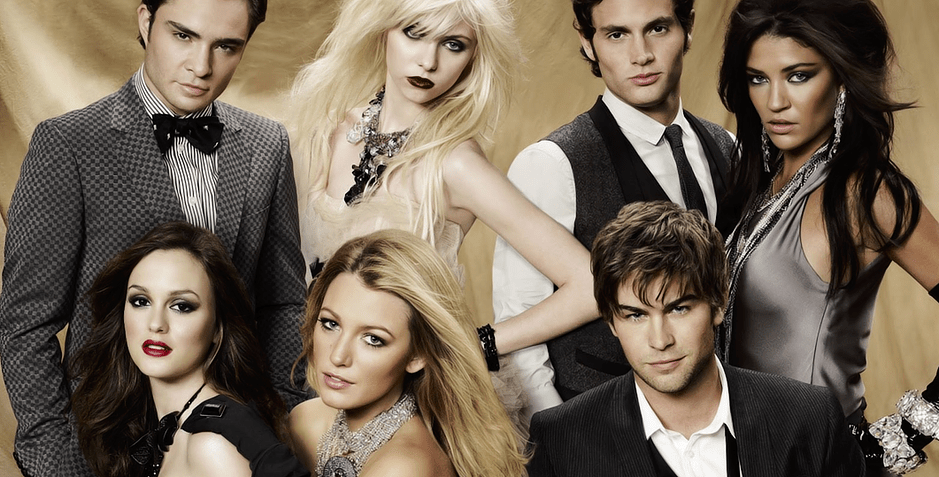

Manhattan... Escola de adolescentes ricos, poucas coisas reais das quais ocupar-se e todo o tempo do mundo para explorar as tentações que a cidade de Nova lorque pode oferecer. O ambiente perfeito para o império da intriga, dos comentários mal-intencionados e os boatos. Dos mesmos produtores de The O.C. Gossip Girl, baseada nas famosas narrativas de Cecily von Ziegesar, que conta a vida de um grupo de jovens milionários através dos olhos de uma bloger que sabe tudo o que acontece em suas vidas, e que é ávida por descobrir e expor qualquer escândalo. Desse modo, acabamos sabendo tudo sobre a intensa rivalidade que há entre Serena e Blair, triângulos amorosos, amigos e inimigos, e tudo o que as mensagens de texto dos celulares podem revelar... Tudo isso a partir da volta repentina de Serena a Manhattan, depois de exilar-se, por vontade própria, em um internato.
